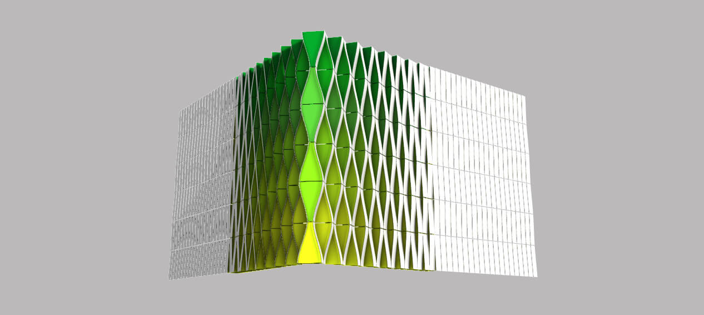

Некоторое время назад я публиковал видео в котором был подробно показан алгоритм построения фасада торгового центра Messe Basel от архитектурного бюро Herzog de Meuron. Данный алгоритм содержит несколько недостатков. Во первых, он использует функции из модуля ICEM, который в большинстве случаев недоступен архитектурным бюро, проектирующим в Digital Project вместо CATIA. Во вторых, метод построения волнообразных элементов, основанный на касательных к управляющей поверхности, в результате даёт криволинейные развёртки усложняющие раскрой материала. Новую версию алгоритма мы разберём на примере фасада лаборатории медицинского университета города Гронинген, спроектированного архитектурным бюро UNSTUDIO.
Как уже было сказано, предыдущий алгоритм разделял большую поверхность на множество маленьких. В каждой, получившейся в результате деления, ячейке определялись касательные к поверхности, которые затем отклонялись на угол заданный двухмерной функцией.
Для оптимального раскроя материала и обработки кромки металлических панелей необходимо, чтобы проекции волнообразных элементов были прямоугольными. Это означает, что угол раскрытия должен быть пропорционален длинам сегментов ломанной линии, построенной на поверхности. На рисунке ниже изображены проекции панелей расположенные вдоль линии стены. Фасад торгового центра Messe Basel тоже является достаточно прямолинейным, за исключением центрального атриума, это необходимо для упрощённого покрытия поверхности параллелепипедами. На данный момент я не пробовал работать с поверхностями двойной кривизны, но думаю что если допустить трапециевидную проекцию элементов, то ими можно будет покрыть относительно гладкую основу.

Для начала подключимся к работающей CATIA.
using ShapeFactory
app = dispatch("CATIA.Application")
sel = app.ActiveDocument.Selection
prt = app.ActiveDocument.PartТеперь нужно задать параметры нашего фасада.
function new_parameter(name, type, value)
p = prt.Parameters.CreateDimension(name, type, 0)
p.ValuateFromString(value)
return p
end
a0 = new_parameter("from_angle", "ANGLE", "45deg")
a1 = new_parameter("to_angle", "ANGLE", "1deg")
rw = new_parameter("ribbon_width", "LENGTH", "300mm")
rh = new_parameter("ribbon_height", "LENGTH", "1000mm")
ri = new_parameter("ribbon_inset", "LENGTH", "50mm")
fi = new_parameter("flange_inset", "LENGTH", "20mm")
rn = 10Также нам понадобится несколько вспомогательных направлений и плоскость XY.
gst = prt.HybridBodies.Add()
gst.Name = "Output"
fac = prt.HybridShapeFactory
xyp = prt.FindObjectByName("xy plane")
ydr = fac.AddNewDirectionByCoord(0, 1, 0)
zdr = fac.AddNewDirectionByCoord(0, 0, 1)В моей версии CATIA формулы не воспринимают полные имена параметров начинающиеся с Part, поэтому нам нужно будет обрезать первый компонент имени. Вот пара функций для поддержания чистоты кода.
function Base.repr(idsp::Ptr{IDispatch})
return join(split(idsp.Name, "\\")[2:end], "\\")
end
function relate(idsp::Ptr{IDispatch}, frm::String)
name = replace(repr(idsp), "\\" => "_")
prt.Relations.CreateFormula(name, "", idsp, frm)
endТак как фасад является симметричным относительно угла здания, а динамика распространена в одном направлении, то нам достаточно будет построить только один интерполирующий ряд панелей. Для лучшего понимания программы я обозначил анатомию составляющих поверхностей.
Волнообразный элемент (B - blend) строится касательно по тангенсу к поверхностям E1,E2, которые в свою очередь выдавлены из противоположных рёбер основного параллелепипеда. Фланец FLN проходит через точку PIN и обрезается охватывающей парой B. Для точной проработки деталей, можно заменить упрощенную конструкцию конкретной PowerCopy с включенными креплениями кромкой и стыками. Все что нужно подать на вход, это два противоположных ребра и среднюю плоскость. Итак, функция для построения изгиба.
function blend_surface(edges, flip)
n = (1, 2)
e = fac.AddNewExtrude.(edges, 0, (2 * -flip, 2 * flip), zdr)
b = fac.AddNewBlend()
b.Coupling = 4
b.SetCurve.(n, edges)
b.SetSupport.(n, e)
b.SetContinuity.(n, 1)
b.SetTransition.(n, (flip, -flip))
b.RuledDevelopableSurface = true
return b
endЦветной фланец, закрывающий просвет между изгибами, строится так.
function flange_surface(edges, plane, limit1, limit2, flip)
pin = fac.AddNewPointOnCurveFromDistance(edges[2], 0, false)
ppn = fac.AddNewLineAngle(edges[2], xyp, pin, false, 0, 1, 90, false)
relate(pin.Ratio, "$(repr(fi))")
ext = fac.AddNewExtrude(pin, 0, 1, zdr)
relate(ext.EndOffset, "$(repr(rh)) * -$(flip)")
fln = fac.AddNewExtrude(ext, 0, 10, fac.AddNewDirection(ppn))
fln.SecondLimitType = 2
fln.SecondUptoElement = plane
s1 = fac.AddNewHybridSplit(fln, limit1, flip)
s2 = fac.AddNewHybridSplit(s1, limit2, flip)
gst.AppendHybridShape(s2)
sel.Add.((fln, s1, pin, ppn, ext, edges...))
endПара противоположных рёбер.
function main_edges(pts, angle)
edg = fac.AddNewLineAngle.(ydr, xyp, pts[end-1:end], false, 0, 1, 1, (false, true))
relate(edg[1].EndOffset, "$(repr(rw)) + $(repr(ri))")
relate(edg[1].Angle, angle)
relate(edg[2].BeginOffset, "-$(repr(ri))")
relate(edg[2].EndOffset, "$(repr(rw))")
relate(edg[2].Angle, angle)
return edg
endА теперь несколько комментариев к основной программе. Зависимости между геометрией и параметрами определяются с помощью формул. Формула CATIA это небольшое выражение написанное на ограниченном языке EKL (Engineering Knowledge Language). Значения переменных вычисленные в Julia программе встраиваются в формулу через оператор $(), в том числе и строковые имена параметров. Связь параметра с формулой задаётся через relate(parameter, formula). Четные и нечётные элементы фасада требуют небольших различий в своей обработке, за это отвечает переменная sgn принимающая (1, -1) соответственно. Соберём всё в одну функцию.
function ribbons()
px = [fac.AddNewPointCoord(0, 0, 0)]
dt = 1 / (rn-1)
pl = nothing
bl = nothing
for n in 0:rn-1
ndt = n * dt
sgn = 1 - ((n % 2) * 2)
ang = "$(repr(a1)) * $(ndt) + $(repr(a0)) * (1- $(ndt))"
frm = "$(repr(rw))/cos($(ang))"
frm = n == 0 ? frm : "$(repr(px[end].Y)) + ($(frm))"
push!(px, fac.AddNewPointCoord(0, 0, 0))
relate(px[end].Z, "$((n+1) % 2) * -$(repr(rh))")
relate(px[end].Y, frm)
gst.AppendHybridShape(px[end])
edges = main_edges(px[end-1:end], ang)
gst.AppendHybridShape.(edges)
blend = blend_surface(edges, sgn)
gst.AppendHybridShape(blend)
if pl != nothing
flange_surface(edges, pl, bl, blend, sgn)
end
pl = fac.AddNewPlaneAngle(xyp, edges[1], 90, false)
bl = blend
end
endСпрячем ненужные элементы и обновим дерево построений.
ribbons()
sel.VisProperties.SetShow(1)
prt.Update()Я обязательно попробую обобщить этот метод на произвольные поверхности. В случае успеха непременно напишу об этом интересную статью.
